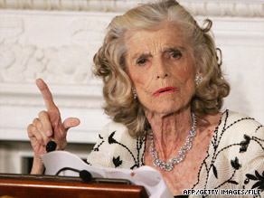

Chương 8

gười lớn tuổi nhất. trong gia đình Kennedy sau Rose, là Eunice, mà tôi đã từng quen biết qua các hoạt động giúp đỡ những người chậm phát triển trí khôn của chúng tôi. Khi tôi đến thăm nàng tại nhà Hoa Thịnh Đốn, thì chồng nàng, Sargent Shriver, đang hô hào thành lập Đoàn Chí Nguyện Hoà bình.

Eunice Kennedy
Tôi nhớ lại, lúc bước vào căn nhà của nàng lần đầu tiên, tôi cảm thấy nó mang một không khí của hoạt động, của sự kết giao. Tôi ngồi một mình trong phòng khách chờ đợi nữ chủ nhân. Các khung cửa kính đều mở rộng hướng ra một mô đất cao, và xa hơn nữa, là bãi cỏ xanh mượt với những rặng cây bao quanh.
Tôi chờ không lâu. Eunice bước vào và vội vã giải thích là nàng đang bận rộn với một số trẻ em. Tôi chợt nhớ: đây là một trường hè đặc biệt dành cho những đứa trẻ chậm phát triển trí khôn.
Eulice đúng là mẫu người mang họ Kennedy, tôi tự nghĩ, khi ngồi nghe nàng tổng kết các hoạt động hàng ngày của nàng, một ngày tràn ngập với những vấn đề liên quan đến công việc của chồng cũng như của riêng nàng. Mỗi cá nhân của gia đình Kennedy hình như đều có một trách nhiệm đặc biệt. Trách nhiệm của Eunice Shriver thuộc lãnh vực: chậm phát triển trí khôn.
Đó là một người đàn bà gợi ngay sự chú ý, thẳng thắn, cứng cỏi, thành thật và có một trí thông minh vượt ra ngoài trí thông minh thông thường. Nàng có cái uy của một người mang họ Kennedy, có năng lực và sự nổi bật của một người trong gia đình Kennedy. Nàng là một người đàn bà tượng trưng nhất trong những người đàn bà Kennedy. Trong lúc tôi viết cuốn sách này, có tin tức cho biết, Sargent Shriver sẽ bước vào các hoạt động chính trị. Nếu sự thật như vậy; người vợ sẽ là tài sản chính trị lớn nhất của ông. Nàng sẽ là người đưa ra các đề nghị, các ý kiến sáng giá và mạnh bạo, giúp đỡ cho bước đường sự nghiệp mới mẻ của chồng.
Tôi nhớ lại lần đầu nói chuyện với Eunice qua điện thoại. Tiếng nói từ xa của nàng khiến tôi nhận ra ngay.
Đó là một người trong họ Kennedy, tôi tự nhủ.
- Pearl Buck? Đây là Eunice Shriver. Tôi muốn...
Giọng nói ấy gây cho tôi cảm giác gần gũi, thích thú và... mọi việc đều có vẻ như tốt đẹp cả. Cảm giác này có khắp nơi trong ngôi nhà của Eunice.
Sargent Shriver là một người đàn ông vui vẻ và thông minh, một loại người cởi mở, một người chồng kiêu hãnh cho người vợ.
Những người đàn bà Kennedy đã kết hôn cũng chưa phải dễ dàng khiến họ trở thành những người vợ. Chồng của họ phải luôn luôn chứng tỏ sự mạnh mẽ của người đàn ông. Sargent Shriver còn có bề ngoài chất phát, bề ngoài hờ hững ấy, làm cho ông không lưu tâm, hoặc quên hẳn sẽ có một cuộc tiếp đón quan trọng tại toà đại sứ Hoa Kỳ ở Ba Lê dành cho ông khi ông sang đây.
Shriver thâu đoạt các thắng lợi bằng những phương pháp riêng của ông. Cứ nhìn Eunice và Shriver, chúng ta sẽ biết những phương pháp đó như thế nào?
Hiển nhiên ông yêu nàng, hiểu biết nàng. Ông luôn luôn lễ độ, dịu dàng, luôn luôn sẵn sàng nghe các lý luận của nàng, nhưng ai cũng biết, các quyết định sau cùng là của. Ông là một kẻ không thể đánh bại một cách dễ dàng.
Có một không khí hoàn toàn hiểu biết giữa những người trong gia đình Shriver. Mỗi người đều được phép trình bày ý kiến của mình, nhưng không được phép ngắt lời kẻ khác. Phương diện này xem ra thì rất tầm thường giữa những cặp vợ chồng người Mỹ khác. Ngắt lời người khác đối với họ không có gì gọi là sỉ nhục. Tôi đã từng để ý, dường như mỗi người Mỹ sinh ra đã là một kẻ chuyên chận lời kẻ khác. Giữa Eunice và chồng nàng lại khác hẳn, họ chú ý và kính trọng lẫn nhau.
Một lần tôi có dịp đến viếng Sargent Shriver tại văn phòng làm việc của ông, và cách thức mà ông kiên nhẫn ngồi nghe tôi nói đã làm tôi xúc động. Ông hiểu biết rất nhanh những gì tôi nói. Ông sẵn sàng chỉ vẽ và giúp đỡ. Tôi cảm thấy một ảnh hưởng của những người mang giống họ Kennedy trên phương diện này ở ông, mặc dầu tôi chắc chắn bản chất riêng của ông là một con người đây tình cảm.
Bản tính của tất cả những người trong gia đình Kennedy là giúp đỡ bất cứ ai, trên bất cứ lãnh vực nào mà họ xét thấy sự giúp đỡ của họ cần thiết. Ngay cả Joseph Kennedy Jr, người đã từng chiến đấu cho các quyền lợi riêng của mình một cách quyết liệt, nhưng ông cũng không quên các giúp đỡ có tính cách nhân đạo. Kinh nghiệm thăng trầm đã dạy cho ông không nên hy vọng đến sự biết ơn. Và kinh nghiệm học hỏi đã khiến ông thốt lên một câu đầy chua chát: Mỗi hành vi tốt đều mang đến hình phạt riêng của nó. Vì vậy ông gây dựng một lề thói riêng biệt của người mang giòng họ Kennedy: Những giúp đỡ nhân đạo đều được giấu kín. Có nhiều người đã sống cả nửa cuộc đời còn lại của họ bằng tiền bạc hoặc được giúp đỡ công ăn việc làm bởi Joseph Kennedy Jr. mà họ vẫn không biết. Ông không muốn những người như thế biết lòng nhân ái của ông: ông e rằng lòng tự trọng của họ bị tước đoạt. Có nhiều người đã nghĩ ông như là một người khó khăn và mặc cả, và quả thật đã có con người như thể trong ông, cũng như một chút ít trong mọi người mang họ Kennedy, nhưng lòng quảng đại to tát đã cân bằng tất cả.
° ° °
Eunice, tôi biết là người đã trao tất cả tình thương, sự gần gũi và mang vui tươi đến cho chị của nàng Rosemary, Lúc Rosemary sinh ra, Joe đã lên bốn và Jack được ba tuổi. Rose Kennedy lúc ấy mới hai mươi tám tuổi và bà đây đủ sức khoẻ. Vì vậy không có bất kỳ một nghi ngờ nào cho rằng đứa bé gái mà bà mới sinh ra không thể nào trở thành một người lớn được.
Rosemary đẹp như mẹ, chỉ chậm chập trên mọi phương diện của các đứa bé bình thường khi nàng mới phát triển. Các anh của nàng cho rằng hiện tượng đó không có gì đáng quan tâm và tất cả thiếu sót sẽ được trả lại khi nàng lớn khôn chút nữa. Các bác sĩ cũng cho rằng nàng sẽ bình thường một cách không ngờ được. Nhưng không, Rosemary ngừng lại ở đó. Nàng trở thành đần độn trí khôn vĩnh viễn, như một đứa trẻ.
Như tôi đã nói, Rose Kennedy từ chối gửi con vào một học viện dành riêng cho các trẻ cùng loại. Người cha nhấn mạnh rằng bất kỳ cái gì có thể làm được cho Rosemary trong một học viện cũng có thể làm được ở nhà.
Khi Joe và Jack lớn lên và các đứa bé khác tiếp nối nhau ra đời, Rosemary cũng lớn lên, thể chất cũng mạnh khoẻ và dễ thương, nhưng nàng không biết gì hết.
Hiển nhiên là gia đình đã làm mọi cách có thể làm để tạo cho cô gái thiếu may mắn này một đời sống đầy đủ hạnh phúc. Bấy giờ Rosemary chỉ làm những gì được chỉ dạy, dĩ nhiên đây là cách duy nhất để nàng đáp trả lòng yêu thương của mọi người.
Khi lớn lên, đời sống của Rosemary vấp phải nhiều vấn đề trầm trọng. Nàng không thể mãi mãi được xem như là một đứa trẻ lên mười. Các anh của nàng phải khiêu vũ với nàng tại các buổi dạ hội. Nàng nhảy khá giỏi, nhưng các cậu trai khác không bao giờ tán tỉnh hoặc mời nàng nhảy. Và qua đôi mắt của nàng, người ta đọc được câu hỏi tại sao? Làmsao nàng có thể giải đáp được?
Nàng thích mặc áo đẹp, thích trang điểm và cũng thích quây quần với mọi người. Nhưng buồn thay mọi người, không phải trong gia đình nàng đều tránh né nàng.
Đại sứ Joseph P. Kennedy và phu nhân đã mang cô con gái này sang Luân Đôn và tất cả gia đình đã vào bệ kiến nhà vua và hoàng hậu. Nhưng vào năm 1941, trở về xứ, chừng ấy mới thấy rõ Rosemary càng lúc càng đần độn. Nàng hay cãi họ và rất khó cai quản.
Nàng trở nên gắt gỏng, cằn nhằn, thường ngồi một chỗ và không lưu tâm đến một ai nữa.
Hết vị bác sĩ này đến vị bác sĩ khác được mời đến chữa chạy cho nàng, và họ đều nói giống nhau: Tốt hơn là nên gửi nàng đến một nơi khiến nàng ít có dịp so sánh, ganh đua hơn. Nàng sẽ sống êm đềm với những người khác cùng hoàn cảnh như nàng. Một học viện Công giáo được chọn để gửi Rosemary.
Vào đó, nàng tìm được một đời sống yên lành với những kẻ cùng cảnh ngộ khác.
Một ngày vào mùa hạ, khi tôi đang ở trong ngôi nhà riêng tại Vermont, và đang gấp rút viết quyển sách này thì điện thoại reo vang. Tôi nhắc ống nghe và lại nhận ra tiếng nói không vấp váp và nhấn mạnh của một người mang họ Kennedy, người gọi là Eunice Shriver.
Lần này nàng có việc cần nhờ tôi. Nàng muốn tôi viết bài giới thiệu một quyển sách, đúng ra một tường trình về các vụ phá thai, có thể được cho phép. Một khi biết chắc đứa bé sinh ra sẽ không phát triển trí khôn. Tôi có nhiều ý kiến xác đáng về đề tài này, nhưng tôi cũng lấy làm mừng là nàng đã không hỏi ý kiến của tôi trước khi viết quyển sách. Khi nàng yêu cầu, tôi chỉ nói rằng trên tư cách của một người Công giáo, nàng sẽ không thể tán thành vấn đề phá thai và tôi cũng vậy, tôi không thể nói đến vấn đề này. Tôi rất vui khi được nàng nhờ cậy, nhưng việc này tôi đã từ chối, và chúng tôi thông cảm, dù tôi cảm thấy nàng bất đồng ý kiến với tôi, qua tâm hồn chân thật của nàng.
Eunice Kennedy đã tỏ ra rất hữu hiệu trong các cuộc vận động tranh cử chính trị cho các anh, nhờ vào tài tổ chức khéo léo của nàng. Với hai người em gái, Patrick và Jean nàng đã từng tổ chức một tiệc trà tranh cử rất thành công vào năm 1952. Còn là một tay ăn nói rất hữu hiệu, nàng đã bương bả trong các cuộc vận động tranh cử khác của John, và đạt nhiều kết quả ở Illinois, tiểu bang của chồng nàng.
Có một sự bền vững tương tự trong tất cả các người thuộc gia đình Kennedy: một sự đồng dạng. Mỗi người Kennedy đều có cùng kiến thức, năng lực và nhân cách. Đó là một đặc tính chung cho tất cả, nếu có thể gọi như thế.
Khi một trong những người thuộc gia đình này bước vào một căn phòng: đó là mọt sự hiện hữu, một chấp nhận không thể giải thích. Đó là sự hiển nhiên, không thể phú nhận được. Một sự phóng ra từ nhân cách của một gia đình, một kết hợp của sự xác định; của hùng khí, của lý tưởng và của một không khí phấn khởi bao trùm, tất cả được tập trung vào một.
Những người đàn bà Kennedy đều mang đầy đủ nữ tính, nhưng hiển nhiên là nữ tính của thời trang tân tiến: cưỡi ngựa, bóng bàn và mọi thú vui thích hợp khác. Không có ai trong những người đàn bà này là một nội trợ khiêm tốn cả. Họ độc lập, nhưng thận trọng ; lại hữu hiệu trên bất kỳ một vấn đề được theo đuổi nào nhưng họ không kiêu hãnh hay tham vọng, không ích kỷ. Họ quan tâm đến sự tán thành của gia đình hơn là sự chấp nhận từ công chúng.
Không một người đàn bà nào trong gia đình Kennedy tỏ ra hợp đoàn bằng Eunice Shriver. Chịu khó làm việc, rất mực thông minh, tư tưởng chín chắn, con người có vóc dáng thon thả gọn gàng, căng đầy nhựa sống này đã thấy thời gian luôn luôn quá ngắn ngủi cho bao nhiêu hoạt động, bao nhiêu sự sắp xếp trong đời sống nàng. Một đời sống phức tạp được đeo đuổi năm này sang năm khác. Nàng là một người thích dáng vẻ, thích trang điểm ; nhưng lại là một hiền mẫu, một người vợ tận tuỵ, trung thành.
Ở Sargent Shrier, nàng đã có một người đàn ông thích hợp hoàn toàn để gia nhập vào khối gia đình của nàng. Đầy nghị lực và giàu sáng kiến, đoàn chí nguyện hoà bình do tay ông xây dựng trở thành một tổ chức ảnh hưởng sâu xa trên phương diện tinh thần trong thời gian Tổng thống Kennedy cầm quyền. Tổ chức này dưới thời chính phủ Nixon không phải là ít được quan tâm và ít được mọi người biết đến, nhưng phải công nhận mọi tiếng vang đều rớt lại từ thời chính phủ Kennedy. Và các thành quả của tổ chức này lại không thể lường được.
Các con của nàng đã ít nhiều chứng tỏ sự độc lập của chúng. Vì phần nào chúng đã mang gia hệ Kennedy.Các đứa trẻ đều nhã nhặn và lễ độ đáng kinh ngạc. Điều đó chứng tỏ gia đình ấy đã vững chắc như thế nào trên phương diện dạy dỗ và hấp thụ. Các đứa con của họ hấp thụ. nhưng chúng sẽ tạo ra vị trí riêng trong xã hội, gạt bỏ hẳn sự khoe khoang, tự phụ nguồn gốc của chúng. Như là một thành phần nằm trong gia đình Kennedy, chúng chấp nhận mà không hề kinh ngạc về việc một người gần gũi với chúng trở thành Tổng thống Hoa Kỳ. Các đứa trẻ này đã dành cho John sự cung kính đặc biệt, nhưng ông vẫn là cậu của chúng.
Khi John bị ám sát, chúng đều đinh ninh rằng một người mang họ Kennedy khác sẽ thay thế vào chỗ của người cậu. Người mang họ Kennedy ấy đương nhiên là cậu Bob-Robert-Francis-Kennedy.